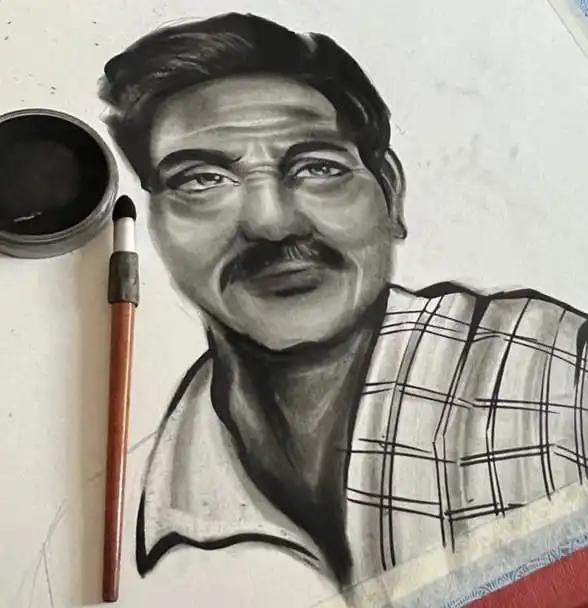

Mitali KumavatI have drunk wine from her eyes ,
I have drunk expensive wine even though am poor .
Mitali Kumavat Jo tu na raha mere sath ,
Sab kuch adhura adhura sa lagne laga hai ,
Mitali Kumavat Mujhse Itni Narazgi Mat Rakh ,
Dil main na sahi to Khayalo mai Rakh .
Ungli Dikha kai mujhe Doshi Thahera ,
Tu itni jaldi na agee badh ,
Mujhe ini akho mai rakh .
Rahe Rahe kai uthti hai tu dard banke sinne mai ,
Mai issi dard ka pyasa hu ,mujhe issi dard mai rakh .
Mitali Kumavattere tasveer me apni yaad likhu ...?
Dukhaye Dil ki kanhani likhu?
ya tujhe mere paas likhu..?
Ijazat ho to tere nam kai agee mera nam likhu ?
Teri khamoshi ka inkaar likhu?
ya Teri baaton se mera pyaar likhu ...?
Tujhe khone ka darr likhu?
ya apni zindagi ko khushnaseeb likhu ..?
Ijazat ho to Teri khubsurti ko chand likhu....?
Har aasu Tera mere naam likhu...?
har hasi meri..tere naam likhu?
Ijazat ho to apne aap ko tere likhu ?

Mitali KumavatWhen two hearts are handpicked for each other, even the simplest moments feel like magic.
How special is it to have that one person who makes the world feel a little lighter, someone who makes your heart race, someone who turns wilted flowers into blooming gardens just by standing next to you.